01
Organic & biological agriculture
Progressively develop biological and organic production practices, with traceability, soil stewardship and quality controls.
NUTRI.N°1 will progressively build an agribusiness around its digital nutrition infrastructure: connecting producers to demand, reducing post-harvest losses, developing smart and climate-resilient agriculture, transforming nutritious foods with renewable energy, and distributing them through a controlled cold chain.
Production will progressively combine biological/organic practices, smart farming, climate resilience and controlled irrigation. The digital platform provides demand and nutrition signals so production is increasingly aligned with what people need and what the market can absorb.
Progressively develop biological and organic production practices, with traceability, soil stewardship and quality controls.
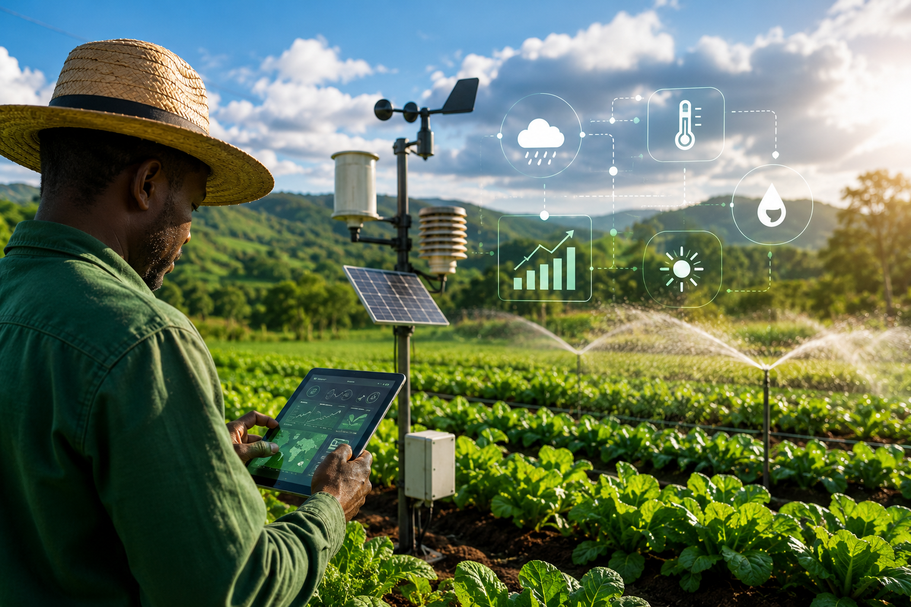
Use climate information, field data and adaptive practices to improve productivity and resilience under changing conditions.
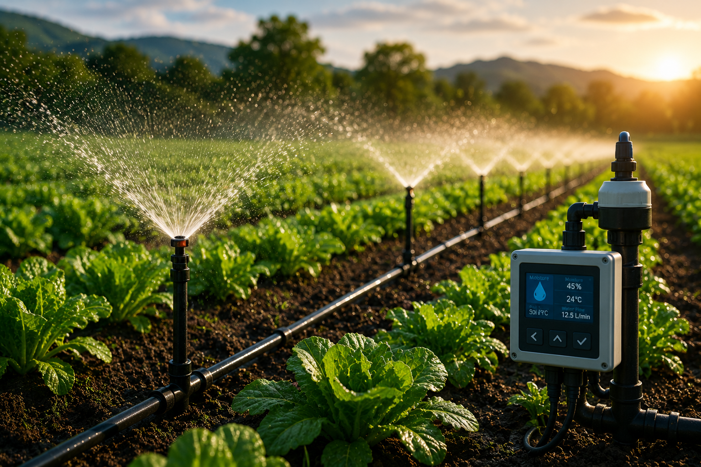
Deliver water according to crop needs, reduce waste and stabilize production through controlled irrigation systems.
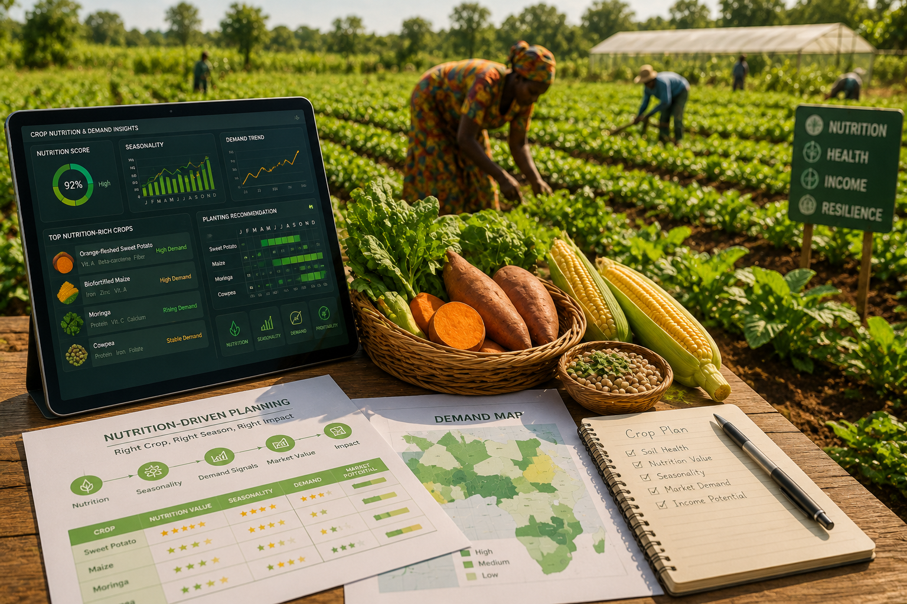
Use nutrition relevance, seasonality and demand signals to prioritize nutrient-rich crops and varieties with market potential.
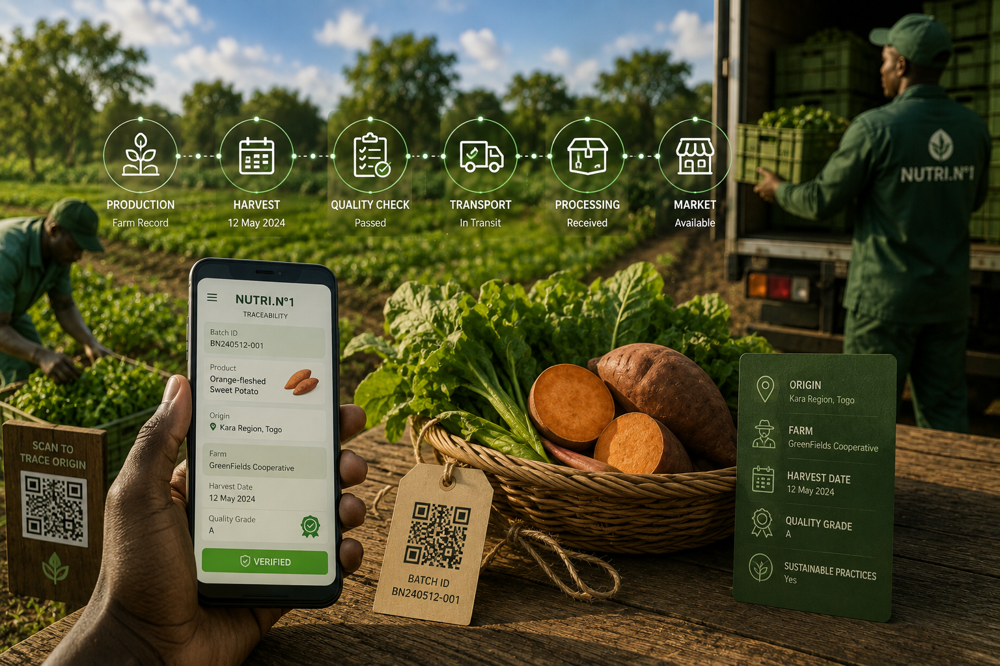
Connect production records, harvest dates, quality attributes, supplier data and origin information to the platform.
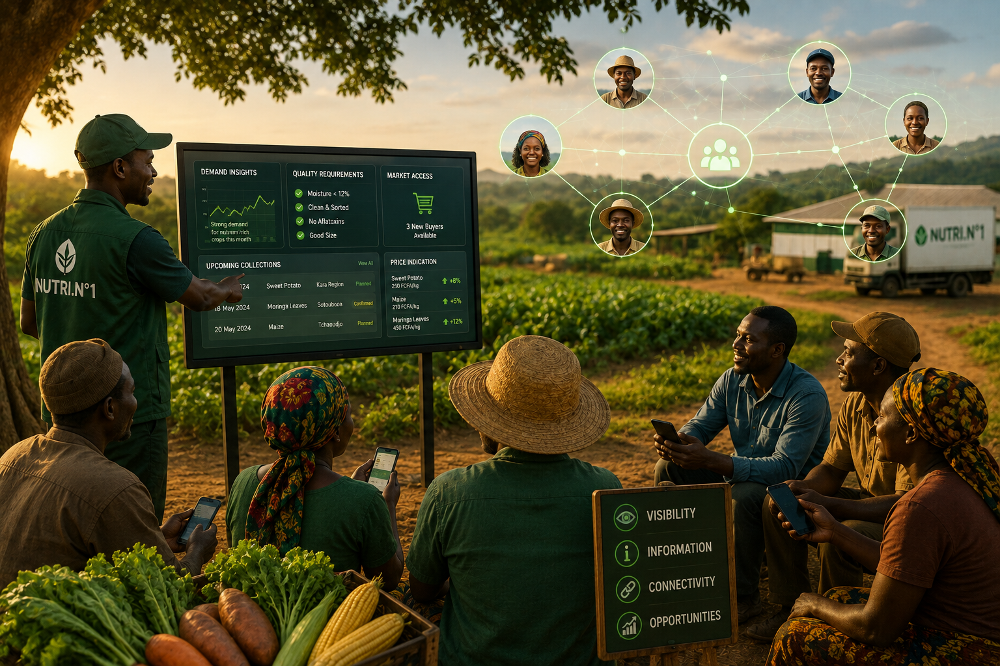
Give producers visibility on demand, quality requirements, collection and market access instead of producing without visibility.
Fruits and vegetables are especially vulnerable to post-harvest losses. NUTRI.N°1 can create a coordination layer connecting availability, harvest timing, quality, storage capacity, processing capacity and buyer demand in real time.
Producers can progressively share availability, expected harvests, volumes, quality attributes and locations. Processing units, distributors, retailers and institutional buyers can respond to supply signals and coordinate collection.
At-risk harvests can progressively be redirected to a nearby cold room, processing unit, buyer, retailer or marketplace demand instead of remaining without an outlet.
Transformation is designed as a controlled extension of the nutrition intelligence and food-supply network — from raw material reception to finished product.
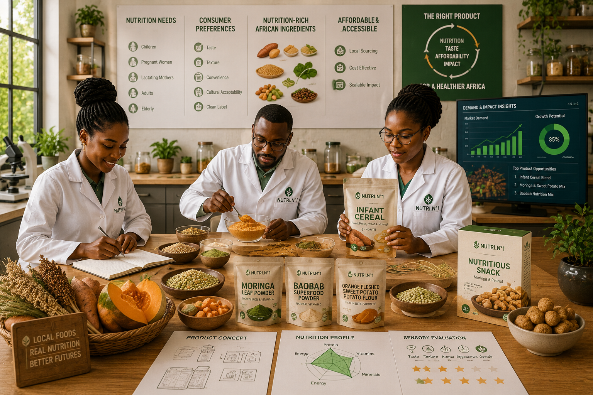
Develop competitive products from nutrient-rich African foods according to nutrition needs, consumer preferences, affordability and demand.
Integrate hygiene, quality control, traceability, process controls and documented procedures from receiving to finished product.
Progressively target 100% renewable electricity for transformation operations, with solar as a core source where technically appropriate.
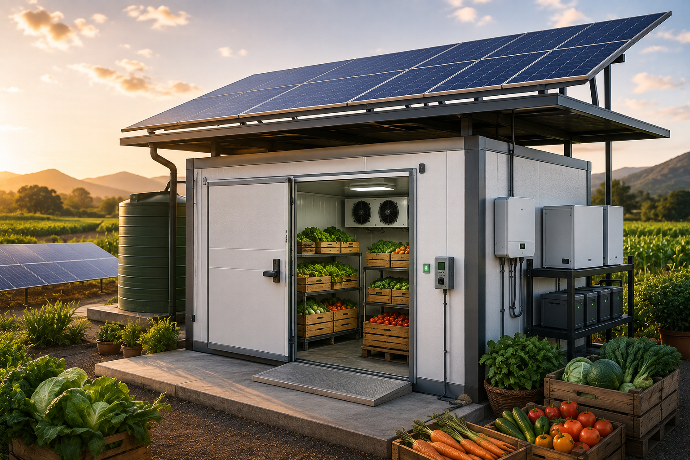
Design controlled-temperature storage with renewable power and appropriate energy storage or backup architecture to protect perishable foods.
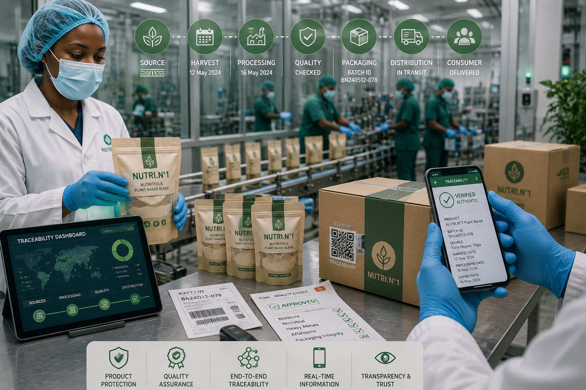
Protect products while maintaining a digital link between source, batch, processing, quality and distribution.
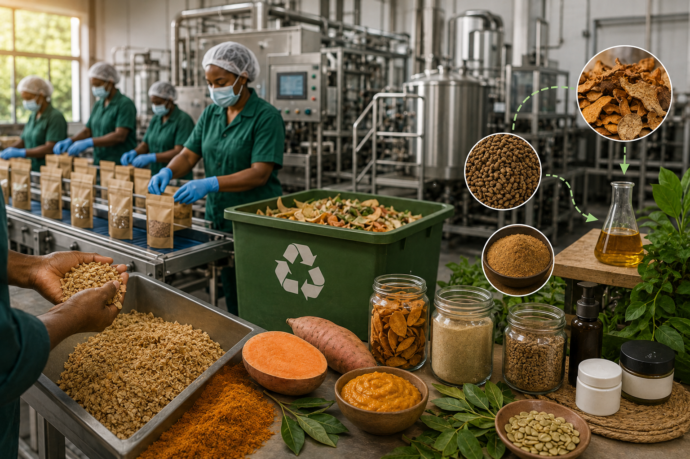
Reduce waste and explore safe by-product valorization across the processing chain.
Large stores and temperature-controlled cold rooms can become the physical backbone between harvest and market — particularly for nutritionally valuable fruits and vegetables.
Quality and traceability at source.
Fast aggregation near producers.
Controlled temperature and monitoring.
Transform, package or prepare.
Reliable cold-chain delivery.
Cold rooms, storage facilities and transport can progressively integrate sensors, temperature logs, alerts, operating procedures and quality checks to maintain the cold chain.
Our long-term ambition is to power transformation and controlled-temperature infrastructure with renewable energy, including solar-powered cold rooms supported by appropriate storage and backup systems.
The commercial layer connects the supply network to consumers, retailers, institutions, restaurants, distributors and other buyers — while demand data continuously improves sourcing, production and product decisions.
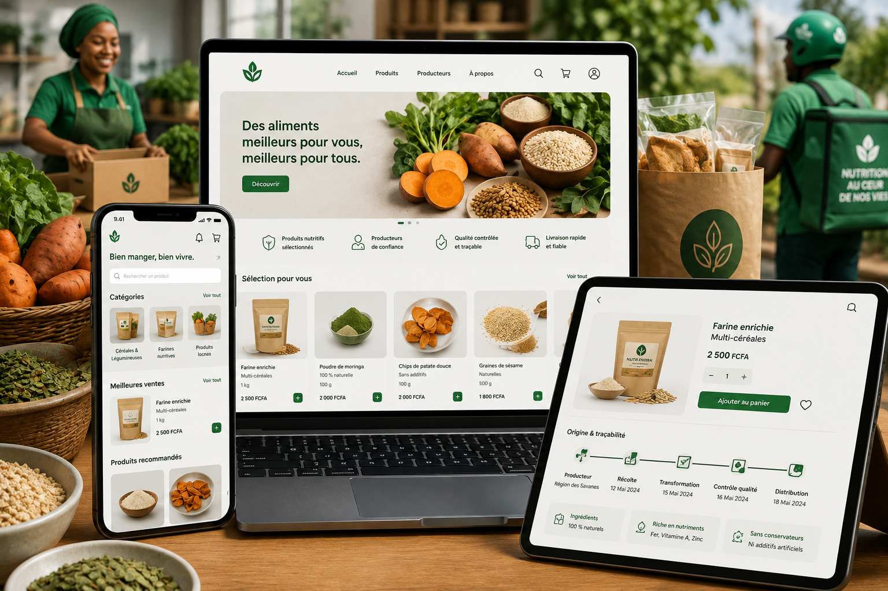
A digital interface for discovering, ordering and distributing nutrition-oriented products from the connected ecosystem.
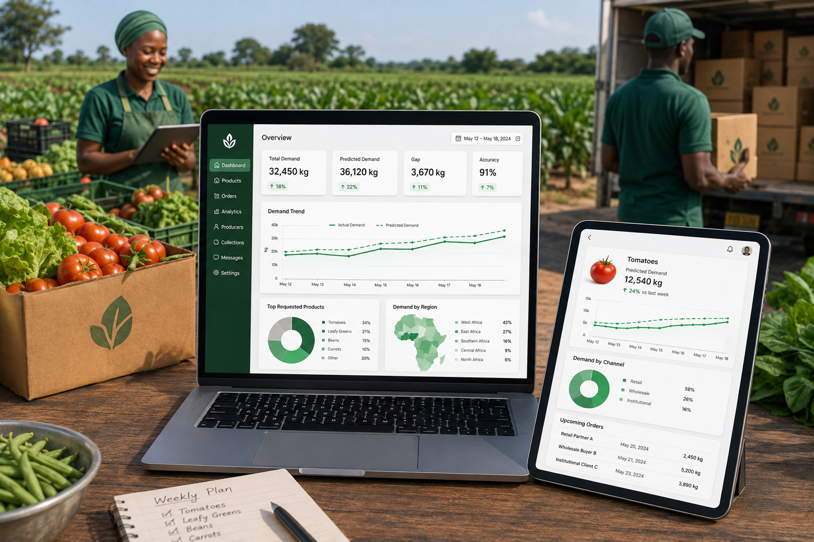
Use platform signals to anticipate demand and reduce the gap between production and actual market needs.
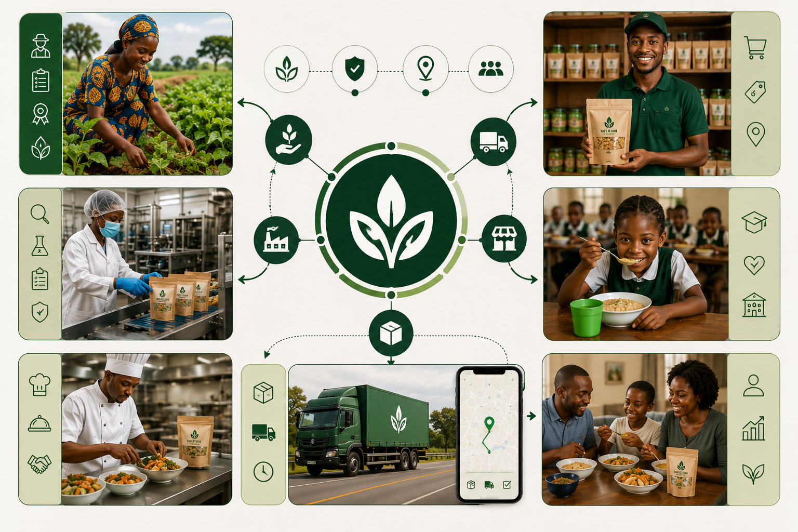
Serve households, retailers, institutions, restaurants, food-service partners and other channels through an organized network.
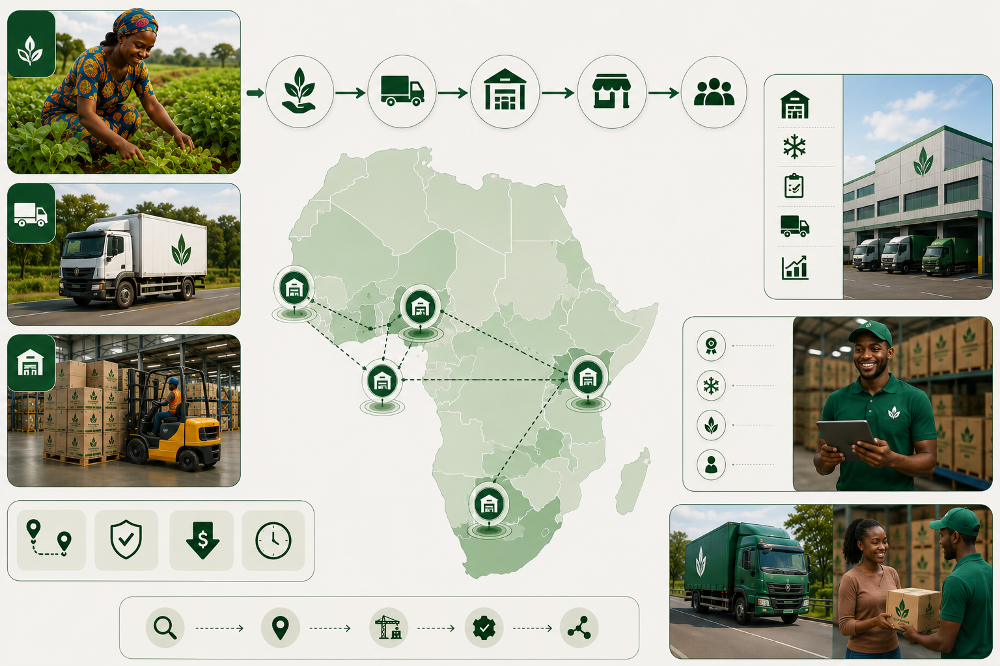
Progressively deploy storage and distribution hubs in target countries to shorten routes and protect product quality.
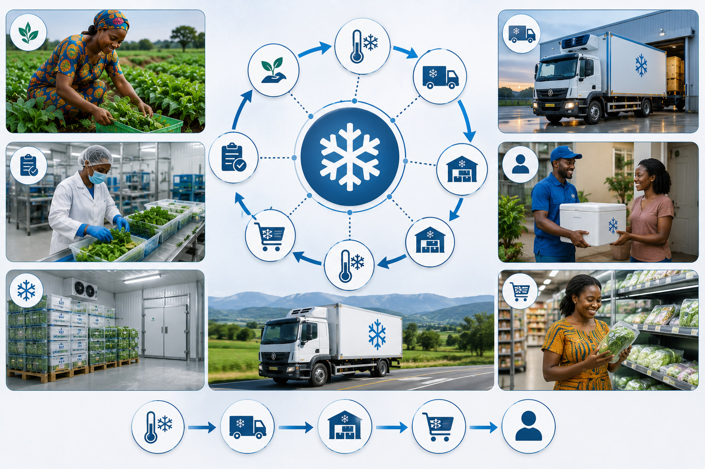
Move temperature-sensitive products through controlled conditions from storage to final market.
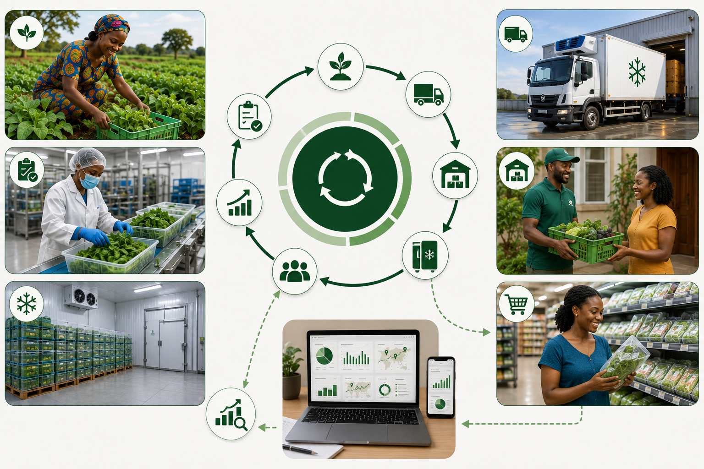
Consumption and demand data return to the system, improving future sourcing, production and product decisions.
NUTRI.N°1 is designed to progressively connect digital intelligence with physical food infrastructure.